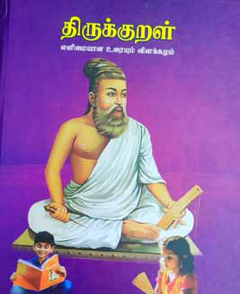
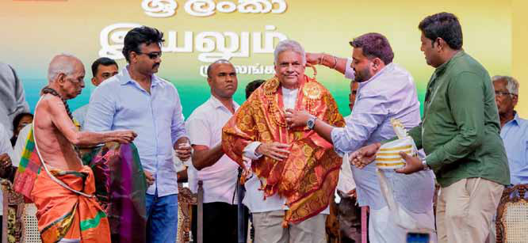
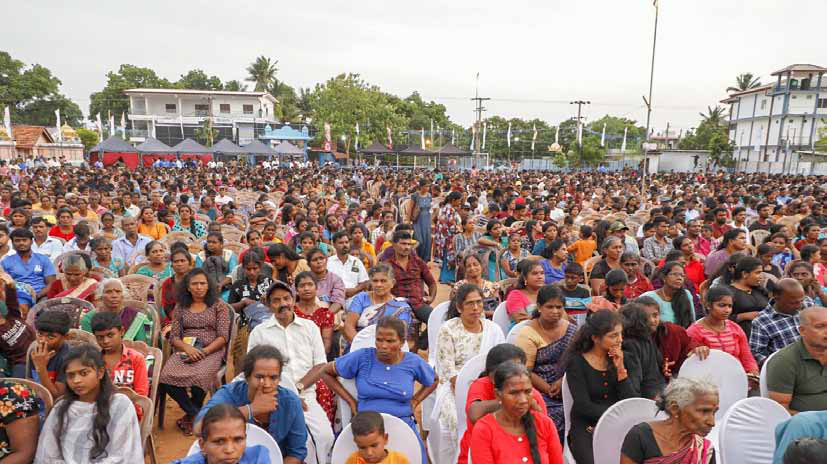

Jaffna Dr. Manonmani Shanmugadas Joins the Legacy of Thirukkural Commentators with Groundbreaking Work
Jaffna Dr. Manonmani Shanmugadas Joins the Legacy of Thirukkural Commentators with Groundbreaking Work
Jaffna Monitor hellojaffnamonitor@gmail.com 40 D r. Manonmani Shanmugadas has made history as arguably the first Sri Lankan Tamil scholar to write a complete commentary on the Thirukkural, an ancient Tamil text renowned for its ethical teachings. Her comprehensive work, which spans over 1,400 pages, is being celebrated for its contemporary clarity and approach. Known for its profound insights into life and ethics, the Thirukkural has seen numerous interpretations over the centuries, but Dr Manonmani's work is particularly notable for its contemporary approach and clarity in language. While Dr. Manonmani's achievement is groundbreaking for Sri Lankan Tamil scholarship. K.S.V. Lakshmi Ammal, also known as Lady Zamindar of Manapparai in Trichy, Tamil Nadu, was the first woman to write a full Thirukkural commentary, 'Thirukkural Deepalankaram', in 1929. Dr. Shanmugadas dedicated the lockdown period during the COVID-19 pandemic to producing her commentary, which is a comprehensive analysis of the Thirukkural, providing word-for-word meanings, detailed explanations, and interpretations. The commentary spans over 1,400 pages and is published by Evergreen Publishers in Jaffna, priced at LKR 5,000. The significance of this Jaffna Dr. Manonmani Shanmugadas Joins the Legacy of Thirukkural Commentators with Groundbreaking Work BY: Our Reporter Dr. Manonmani Shanmugadas
Jaffna Monitor hellojaffnamonitor@gmail.com 41 publication extends beyond its scholarly value. It is also Dr. Manonmani's 70th book, released on her 80th birthday on 14th October 2023, a remarkable achievement in her long literary career. Her commentary joins a long tradition of respected works on the Thirukkural, including those by Parimelazhagar, Manakudavar, Mu. Varadarajan, and Solomon Pappaiya, making it a valuable addition to Tamil literature. This new work will likely serve as a timeless gift for future generations. Tamil scholars have welcomed the publication as an important contribution to the literary world, with many hailing Dr Manonmani's efforts to make the Thirukkural accessible to a modern audience. Book cover of Dr. Manonmani Shanmugadas's complete commentary on the Thirukkural The train service between Colombo and Kankesanthurai officially resumed on September 14, following the reopening of the Mahawa Junction to Anuradhapura railway track after an extensive renovation period. Train No. 4021, an air-conditioned intercity express, became the first to traverse the newly renovated track, departing Colombo Fort at 5:35 a.m. and returning from Kankesanthurai at 1:20 p.m. the same day. This resumption ends a nine-month hiatus on this section of the Northern Line, and railway officials have confirmed that the number of trains will gradually increase. Senior officials told Jaffna Monitor that the return of the iconic Yal Devi Express is also slated for next week. In an exclusive conversation with Jaffna Monitor, a senior railway official highlighted the major upgrades that came with the project. "The 66.4 km Mahawa-Anuradhapura stretch has undergone significant modernisation, including the addition of second platforms at key stations like Ambanpola, Thambuththegama, and Thalawa, which previously had only one platform. This allows for smoother operations and reduced delays," the official explained. "Further, stations such as Galgamuwa, Shravasthripura, and Randenigama, along with Anuradhapura New Town, have been upgraded to accommodate trains with up to 20 carriages. The Mahawa to Anuradhapura track now boasts the most advanced signalling system in the country, a technological leap forward that will drastically cut delays and ensure more efficient train operations along this critical route," he added. Yal Devi Set to Return as Northern Railway Service Resumes Monitor Memo

Jaffna Monitor hellojaffnamonitor@gmail.com 42 J affna District MP Angajan Ramanathan, representing the Sri Lanka Freedom Party (SLFP) and a key supporter of President Ranil Wickremesinghe in the upcoming presidential election, has taken sharp aim at the Ilankai Tamil Arasu Kachchi (ITAK) and prominent party figure M.A. Sumanthiran. In a pointed critique, Ramanathan questioned whether ITAK's decision to offer unconditional support to Opposition Leader Sajith Premadasa is, in fact, a betrayal of the Tamil people. He contrasted this move with the more strategic, conditional backing Sajith Premadasa received from political heavyweights like Rishad Bathiudeen and Rauff Hakeem, suggesting that ITAK's unreserved support may leave Tamil interests at risk. Speaking at an election campaign event in Udduppiddy, Jaffna, supporting Independent Presidential Candidate and incumbent President Ranil Wickremesinghe, Angajan BY: Our Reporter Unconditional Love for Sajith? Angajan Calls Out ITAK’s 'No Strings Attached' Politics Jaffna Angajan with Ranil Wickremesinghe at an election rally in Jaffna
Jaffna Monitor hellojaffnamonitor@gmail.com 43 expressed his discontent. "While Bathiudeen and Hakeem have openly stated that their support for Premadasa comes with conditions, ITAK has chosen to back him unconditionally. Isn't this a clear betrayal of the Tamil people?" he asked, addressing the crowd. He urged the Tamil population of the North and East to resist efforts to scatter their votes and warned them not to be misled by political schemes. "This is not merely an election rally; it's a gathering of gratitude. President Wickremesinghe doesn't need to campaign in the Jaffna District—he's already earned the trust of the people by steering the country through an economic crisis and giving us hope for recovery." Angajan praised Wickremesinghe for his leadership during a difficult time, stating, "When others shirked responsibility, the President stepped up. In just two years, he has brought the country back to normalcy. Had he not taken control, Sri Lanka could have ended up in the same dire straits as Somalia." With the presidential election looming on September 21st, Angajan emphasized the critical nature of the decision ahead. "Do we rise, or do we fall? The choice is in the hands of the people," he said. He also warned that ITAK's actions, including MP Sumanthiran's hasty declaration of support for Sajith Premadasa, are contributing to efforts to divide the Tamil vote. "I personally handed the President the longstanding demands of the Tamil people in writing, and only after those demands were accepted did I offer my support. Sumanthiran, on the other hand, gave his backing to the Opposition Leader without any conditions— this is nothing short of a betrayal," Angajan charged. From left to right: Senthil Thondaman (Eastern Province Governor), President Ranil Wickremesinghe, and MP Angajan.

